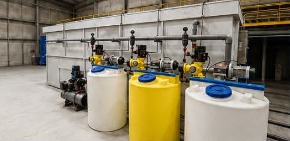
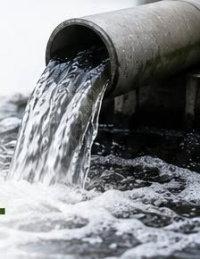

What we deliver
Eight service lines that cover a treatment system's whole life: supplying and building it, running it, and fixing or upgrading it later.
Water treatment systems
- Reverse osmosis systems
- Ultrafiltration systems
- Multimedia / sand filtration
- Activated carbon filtration
- Water softening systems
- Disinfection systems
- Potable water treatment systems
- Bulk water treatment solutions

Wastewater & sewage treatment systems
- Sewage treatment plants (STP)
- Wastewater treatment plants (WWTP)
- Septage treatment facilities (STF)
- Portable STP / WWTP
- Wastewater recovery and reuse systems

Engineering, design & project services
- Process engineering and design
- Project planning
- Design and build
- Equipment selection and integration
- Fabrication
- Mechanical and electrical installation
- Testing and commissioning
- Project management
- Feasibility studies
- Technical consultation

Operation & maintenance
- Plant operation and maintenance
- Preventive maintenance
- Performance monitoring
- Operator training
- Technical support
- After-sales service

Rehabilitation & optimization
- STP / WWTP rehabilitation
- Plant upgrading
- System assessment
- Process improvement
- Troubleshooting
- Capacity enhancement
- Retrofit solutions

Equipment supply & installation
- Air blowers
- Submersible and dry-mounted pumps
- Oil and water separators
- Sludge dewatering systems
- Chemical dosing systems
- Chlorination systems
- Automatic bar screens
- Dissolved air flotation (DAF) systems
- Process tanks and ancillary equipment

Industrial water treatment services
- Boiler water treatment
- Cooling water treatment
- Chilled water treatment
- Pre-operational cleaning
- System passivation
- Water treatment chemical programs

Specialized environmental services
- Rydlyme descaling services
- Sewage pipe de-clogging
- Grease trap treatment
- Odor control and disinfection
- Cistern and overhead tank disinfection
- Customized process and chemical formulation